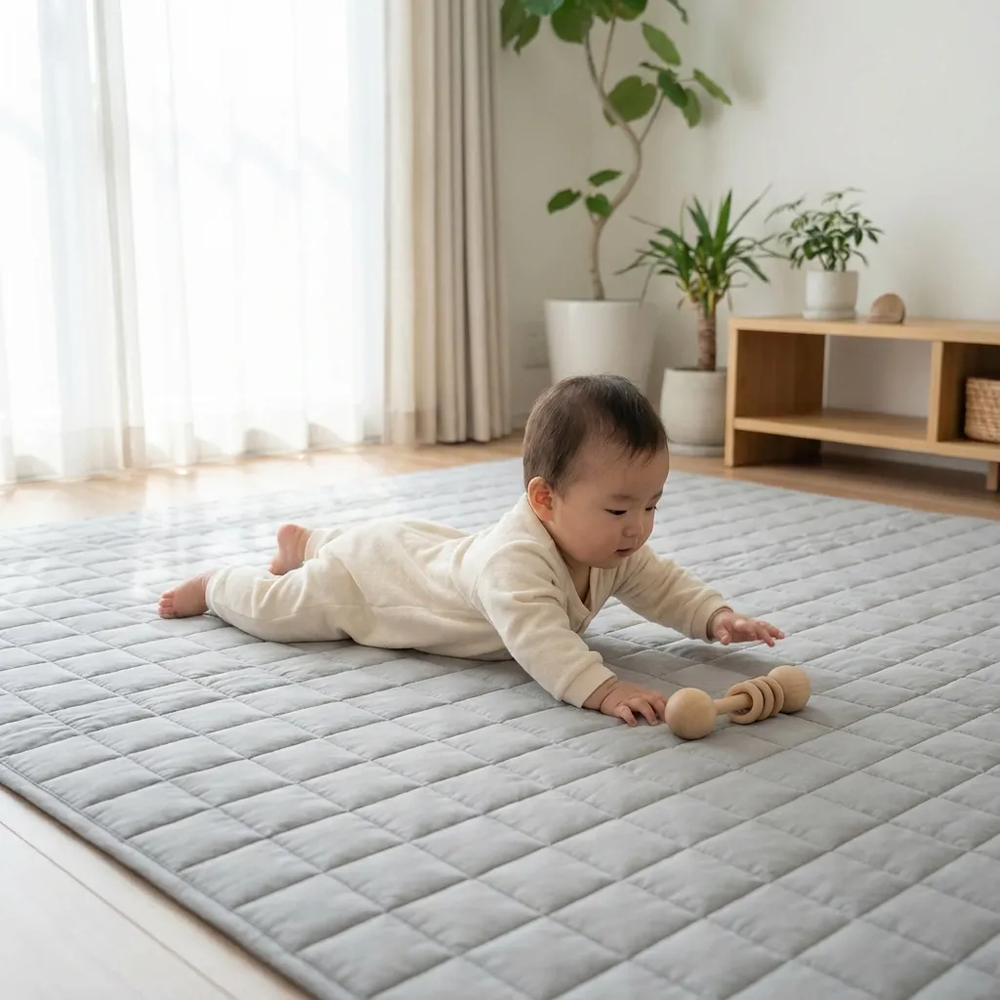

Vie
en crèche
Comment préparer l'adaptation en crèche ?
L'entrée en crèche est une
grande étape. Voici nos conseils pour une séparation en douceur pour bébé et parents.
Lire
la suite →

Pédagogie
Comprendre la motricité libre
Pourquoi est-il important de
laisser l'enfant découvrir ses mouvements par lui-même ? Explications.
Lire la
suite
→
Santé
& Bien-être
Le sommeil de bébé : rythmes et rituels
Tout savoir sur les cycles de
sommeil des tout-petits et comment mettre en place des rituels apaisants.
Lire la
suite →
Alimentation
La diversification alimentaire menée par
l'enfant
Qu'est-ce que la DME ? Quels
sont les avantages et les précautions à prendre ?
Lire
la suite →